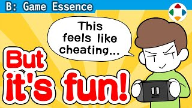
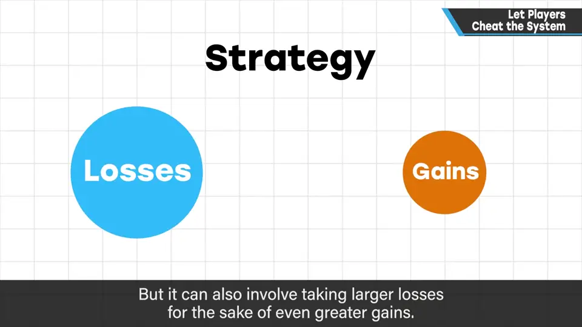
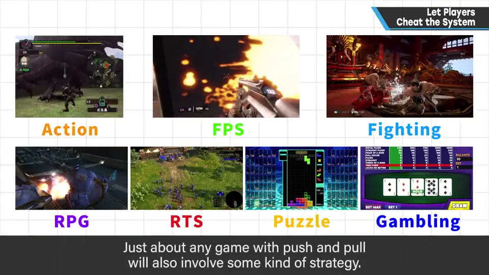
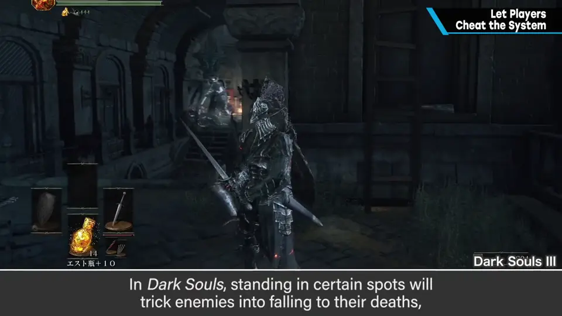
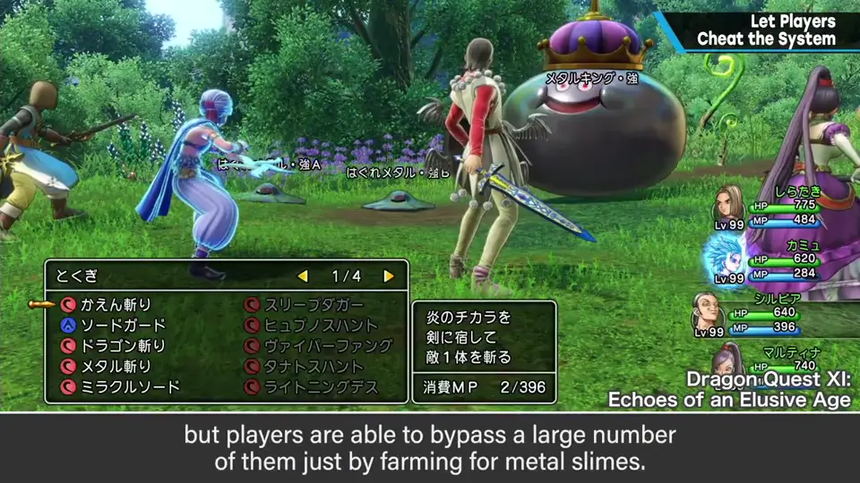
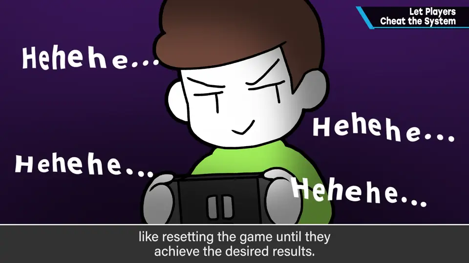

速览
攻略可以定义为：玩家自己如何不吃亏地得到好处。拆开看可能和一般印象不同，但更容易套用到各种东西上；也有「这里多付出一点、换那里更大收获」的玩法。用这个视角想想动作、FPS、格斗、RPG、RTS、解谜、赌博类——凡有博弈的游戏大都适用。游戏由复杂组合构成，有时能钻点小空子，也就是单方面占便宜：例如《黑暗之魂》某处站位会让敌人接连自灭、赚到灵魂。这种破坏平衡的地方在调试阶段往往被仔细消除，但恰恰是这些地方有趣、令人难忘——连战斗平衡调得很细的《勇者斗恶龙》也明显保留了刷金属史莱姆这种大便宜。玩家会拼命钻空子；读档重来直到赢也是一种。改写参数之类当然免谈，但游戏内能做到的一定程度的作弊，最好容许——完全平坦的道路不太有趣。
1. 攻略：少吃亏，多得益 0:03
攻略，是玩家自己如何不吃亏地推进的玩法。说得这么直白，可能和「攻略」一词的印象不同，但这样更容易套用到各种东西上。
再说一遍：不吃亏地推进——也有「在这里吃更大的亏，换那里更大的收获」的玩法。


带着这个想法，想想下面这些游戏：动作、FPS、格斗、RPG、RTS（即时战略）、解谜、赌博类。凡是有博弈的游戏，大致都适用。
2. 钻空子的乐趣 1:12
游戏由复杂的组合构成，所以有时能钻一点小空子——也就是单方面占便宜。
- 例：《黑暗之魂》中，站在某个位置敌人会接连自灭，灵魂哗哗地赚。
- 这种「平衡破坏者」一经发现，往往会在调试阶段被仔细消除；但这种地方反而有趣、印象深刻。


- 就连《勇者斗恶龙》也有刷金属史莱姆这种明显的大便宜。DQ 的战斗平衡调得很细，但弄不好只刷金属史莱姆就能跳过大量战斗。
- 但它显然很好玩，也会留在玩家记忆里。
3. 容许范围内的作弊 2:06
玩家会拼命钻空子。读档重来（重置挑战）也是：重置到赢为止当然会赢，但这本身也能成为乐趣。

自测题
1. 樱井如何定义「攻略」？
玩家自己如何不吃亏地推进（少损失、多收益）；也包括在一处付出更大代价以换取别处更大收获的玩法。 0:03
2. 为什么樱井认为不必把所有「平衡破坏点」都在调试中消除？
那些能单方面占便宜的地方（如《黑暗之魂》敌人自灭、DQ 刷金属史莱姆）往往最有趣、最令人难忘。 1:30
3. 哪些作弊可以容许，哪些不行？
游戏内能做到的一定程度的作弊（如钻空子、重置挑战）最好容许；改写参数之类则免谈。 2:17